Ce document est mis à disposition selon les termes de la Licence Creative Commons Attribution - Pas d’Utilisation Commerciale - Partage dans les Mêmes Conditions 4.0 International.
1. Objectif
L’objectif de cette fiche est de paramétrer un projet Maven pour lancer une analyse SonarQube et envoyer les résultats à un serveur Sonar.
3. Utilisation de SonarQube
Dans cette section, choisir de réaliser :
-
Soit SonarCloud
-
Soit Sonar local
3.1. SonarCloud
SonarCloud est une offre de SonarSource qui propose une offre Sonar en mode Software-as-a-Service.
| Pour un projet dont le code source est libre, la fonctionnalité est gratuite. |
-
Aller sur l’interface SonarCloud
-
Cliquer sur le lien Sign in en haut à droite
-
Sélectionner Configure & Sign up
-
Suivre les étapes proposées
Voici un exemple de résultats obtenus :
Corriger les violations par ordre de priorité, re-lancer l’analyse. Répéter autant de fois que nécessaire.
3.2. Sonar local
Il est nécessaire de disposer d’un serveur SonarQube local.
Pour cela, il est possible de télécharger le logiciel pour lancer une instance locale.
-
Télécharger la dernière version de SonarQube
-
Décompresser l’archive
-
Lancer SonarQube
$SONAR_QUBE_HOME/bin/[OS]/sonar.sh startSans configuration plus poussée, la base de données utilisée par défaut est H2, qui n’est pas destinée à un usge en production.
3.2.1. Lancement de l’analyse SonarQube
Configurer le POM pour disposer de la dernière version du plugin SonarQube pour Maven.
Puis, pour lancer l’analyse SonarQube, exécuter la commande suivante dans le répertoire du projet :
mvn sonar:sonarPar défaut, l’analyse est envoyée au serveur SonarQube local.
3.2.2. Consultation des résultats
Les résultats sont disponibles à http://localhost:9000.
Corriger les violations par ordre de priorité, re-lancer l’analyse. Répéter autant de fois que nécessaire.
4. SonarLint
En fonction de votre IDE, consulter la section adaptée.
4.1. SonarLint pour IntelliJ IDEA
4.1.1. Installation
-
Aller dans le menu menu:Preferences
-
Dans la popup, sélectionner menu:Plugins
-
Cliquer sur Browse repositories…
-
Dans la popup, chercher le terme "sonar"
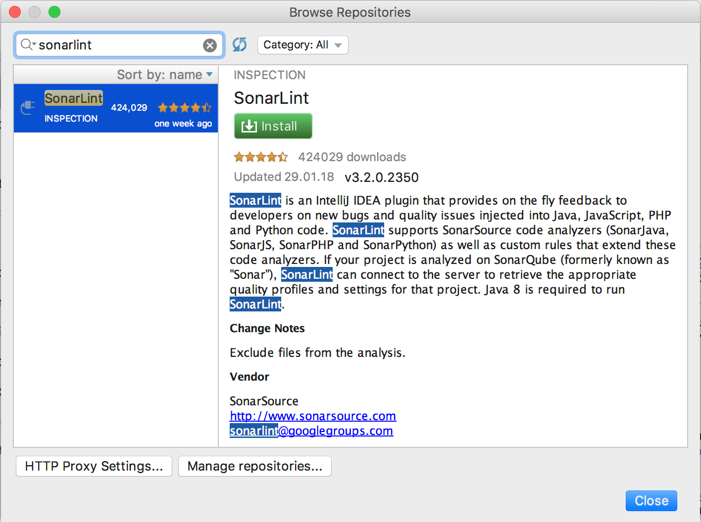 -
Cliquer sur le bouton vert Install
-
Accepter le redémarrage de l’IDE en cliquant sur Restart
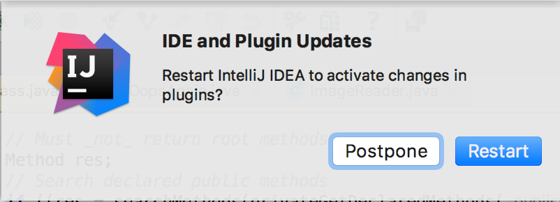
4.1.2. Mode autonome
Le mode autonome permet d’utiliser SonarLint sans instance SonarQube.
-
Ouvrir la vue SonarLint en allant dans le menu
-
L’onglet par défaut est Current file. Naviguer à l’onglet Project file.
-
Dans le menu déroulant, sélectionner "All project files"
-
Cliquer sur le bouton de démarrage de l’analyse
-
Accepter la confirmation en cliquant sur Proceed
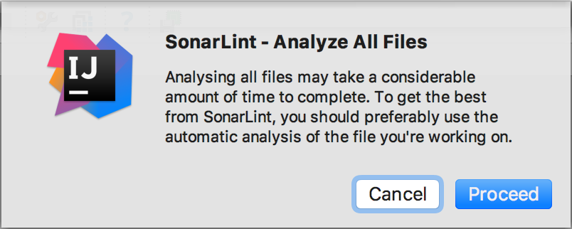 -
Le résultat de l’analyse s’affiche
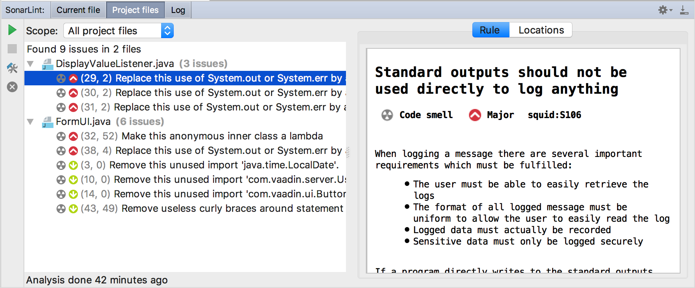
4.1.3. Mode connecté
Le mode connecté permet de connecter SonarLint à une instance SonarQube spécifique
| Dans un contexte d’Intégration Continue, cette approche permet de bénéficier des résultats de l’analyse côté serveur sans impact au niveau de l’IDE. |
-
Dans la vue SonarLint, cliquer sur le bouton Configure SonarLint
-
Dans la popup SonarLint, cocher "Enable bindings to remote SonarQube server"

-
Cliquer sur le bouton Configure servers…
-
Dans le popup "SonarLint general settings", cliquer sur +
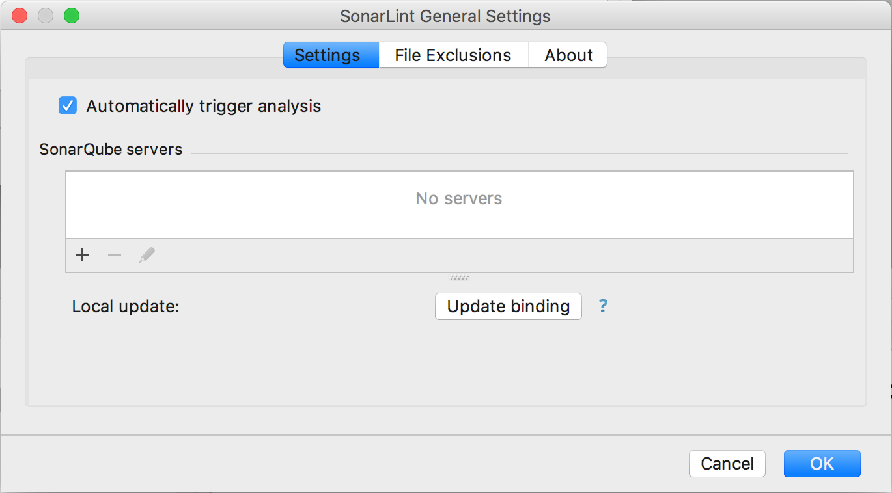 -
Une popup "New SonarQube Server Configuration" apparait
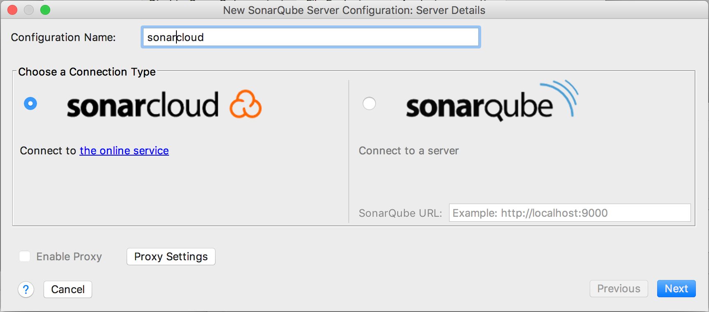 -
Donner un nom à la configuration, par exemple "sonarcloud"
-
Puis cliquer sur Next
-
Dans l’étape suivante, remplir le champ avec le jeton qui a été affecté lors du tutoriel
Jeton oubliéSi le jeton a été égaré, il est possible d’en générer un autre en cliquant sur Generate Token
-
Puis cliquer sur Next
-
Sélectionner l’organisation à laquelle le projet analysé a été associé
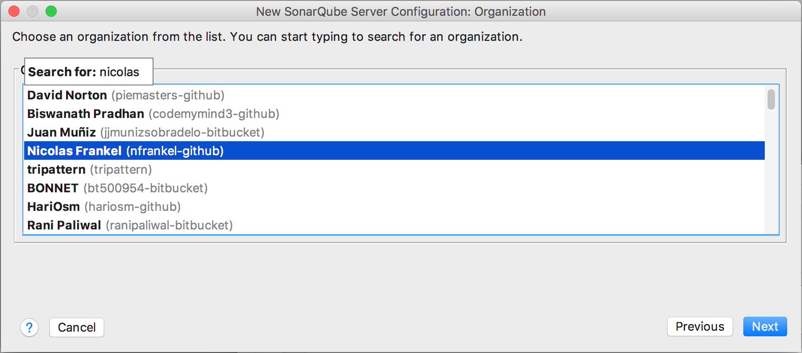En fonction du profil, commencer à taper le nom de l’organisation (par défaut, <nom du profil Github>-github.
-
Cliquer Next
-
Cliquer sur le bouton Finish
-
Fermer les popups en cliquant sur OK
Ne pas oublier de sélectionner le serveur créé :
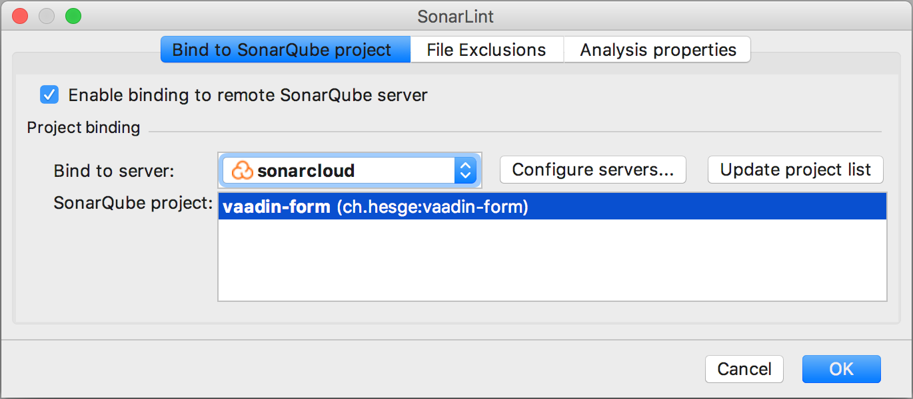 -
Vérifier si la configuration est correcte en affichant un fichier comportant des problèmes.
L’onglet "Current File" de la vue SonarLint doit afficher les problèmes, et l’heure de mise à jour doit être celle de la dernière analyse côté serveur
4.2. SonarLint pour Eclipse
4.2.1. Installation
-
Aller dans le menu
-
Dans le champ Find, indiquer "sonar"
-
Cliquer sur Go

-
Dans l’élément SonarLint, cliquer sur Install
-
Accepter les termes de la license
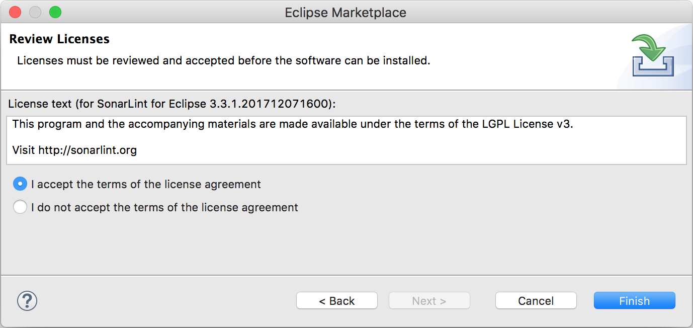 -
Cliquer sur Finish
-
Dans la popup, cliquer sur Restart now pour redémarrer Eclipse
4.2.2. Mode autonome
-
Cliquer-droit sur le projet et sélectionner le menu
-
Accepter la confirmation en cliquant sur Proceed
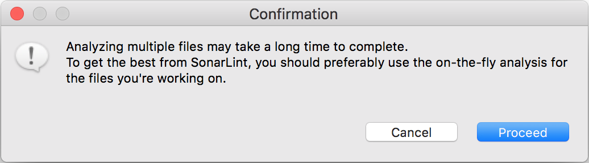 -
La vue SonarLint s’affiche
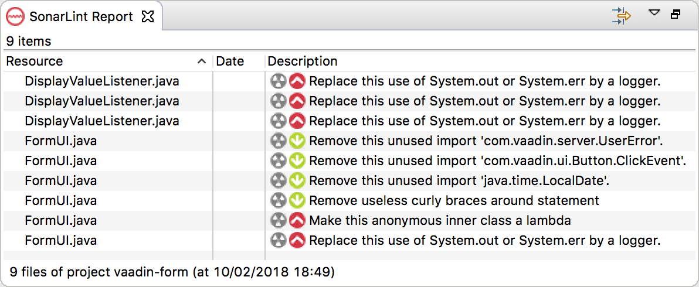
4.2.3. Mode connecté
-
Cliquer-droit sur le projet et sélectionner le menu
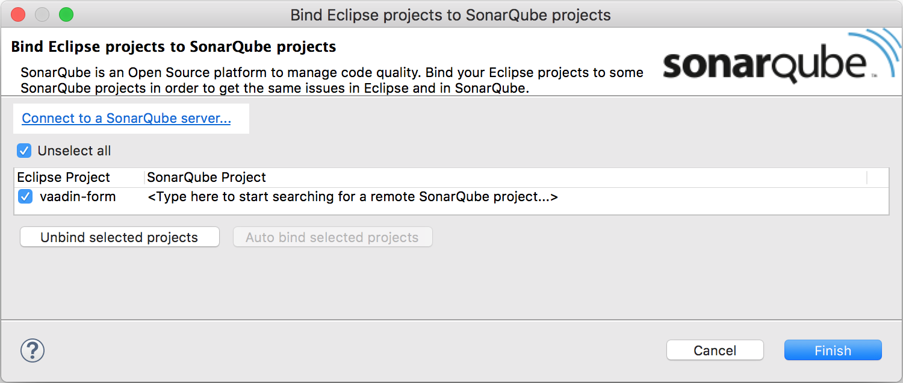 -
Cliquer sur Connect to a SonarQube server…
-
Dans la popup, sélectionner "sonarcloud"
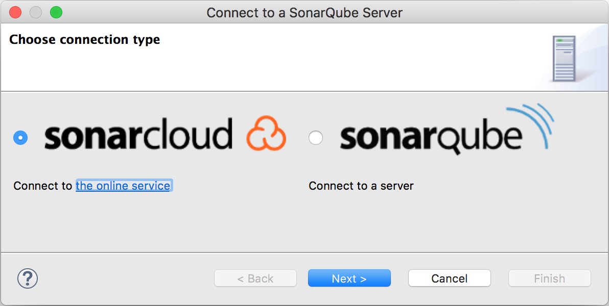 -
Cliquer sur Next >
-
La suite des instructions est similaire aux instructions pour IntelliJ IDEA, étape 7
5. Industrialisation
Le tutoriel SonarCloud indique de lancer la ligne de commande suivante :
mvn sonar:sonar -Dsonar.organization=<organization> \
-Dsonar.host.url=https://sonarcloud.io \
-Dsonar.login=<token>Intégrer les paramètres système de la ligne commande en propriétés Maven.
5.1. Amélioration de la sécurité
La propriété sonar.login ne peut pas être stockée dans le POM, pour d’évidentes raisons de sécurité :
aucun identifiant, mot de passe ou jeton ne doit jamais être stocké avec le projet.
A l’aide de la documentation, déplacer cette propriété dans un profil activé par défaut.